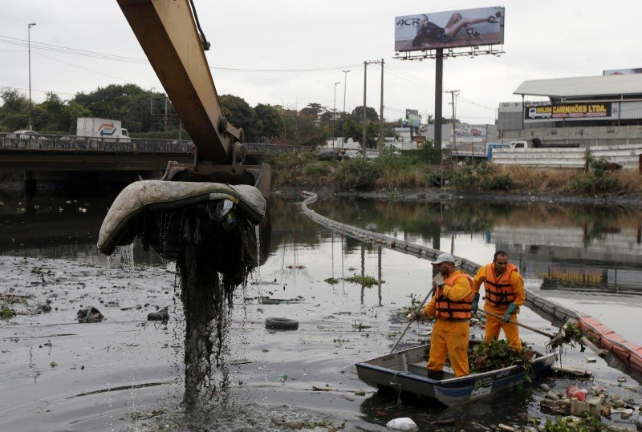

A top biologist gave an ominous piece of advice to Olympic athletes competing in Rio's waters

Men work cleaning up the garbage next to an
ecobarrier at Meriti River which flows into Guanabara Bay, in
Duque de Caxias, near Rio de Janeiro
Less than a week until the start of the Summer Olympics,
results from a 16-month AP study shows
that key bodies of water
for Olympic events in Rio are as filthy as ever, teeming with
dangerous levels of bacteria, viruses, and raw human sewage.
Now comes an ominous warning from a top biologist.
"Don't put your head under water," Dr. Valerie Harwood,
the chair of the University of South Florida's
Integrative Biology Department, warned athletes
and tourists alike on Monday.
Last year, the first results of the same AP study
showed viral levels up to 1.7 million times worse
than what would be considered dangerous in the
United States. Ingesting just three tablespoons
of water, the
AP said, would result in "violent" illness.
Now, at the conclusion of the AP's study over 16 months, infectious adenovirus
readings turned up at 90% of test sites.
"That's a very, very, very high percentage," Harwood said. "Seeing that
level of human pathogenic virus is pretty much unheard of in surface waters
in the U.S. You would never, ever see these levels because we treat our waste
water. You just would not see this."
The Brazilian scientist commissioned by the AP to test the waters said
there had been no marked improvement over the past year.
"Unfortunately, what we've seen throughout all this time is that
there is a variation in the levels of contamination, but it fluctuates
much more as a result of climactic conditions than due to any measures
that may have been taken to try to remove this contamination," said Dr. Fernando Spilki,
the virologist and coordinator of the molecular microbiology laboratory at Feevale University.
According to the study, the two worst locations are the Rodrigo de Freitas
lagoon, where the rowing events will take place, and the Gloria Marina,
where the sailing events will begin.
From the AP:
"In March, 2015, sampling at the Lagoon revealed an astounding 1.73 billion adenoviruses per liter; this June, adenovirus readings were lower but still hair-raising at 248 million adenoviruses per liter. By comparison, in California, viral readings in the thousands per liter are enough to set off alarm bells."
And even more shockingly, things have worsened at the Gloria Marina:
"Despite a project aimed at preventing raw sewage from flowing directly into the Gloria Marina through storm drains, the waters remain just as contaminated. The first sampling there, in March, 2015, showed over 26 million adenoviruses per liter; this June, over 37 million adenoviruses per liter were detected."
Along with the bodies of water to be used in Olympic events by approximately 1,400 athletes, Ipanema and Copacabana Beach, the two most famous beaches in Rio, are also overrun with viruses. Rio officials are expecting hundreds of thousands of tourists and fans to flood its city, meaning many (especially children) could get sick swimming.
From the AP:
"Nearby Ipanema Beach, which is not playing host to any Olympic sports but is among the city's most popular tourist spots, exceeded California standards five times over 12 months, once spiking to nearly 50 times what would be permitted in California."
Olympic sailors and rowers have tried to take precautions ahead of Rio, reportedly dousing oars in bleach, testing better suits, and taking antibiotics. For the open-water swimmers and triathletes, however, there's little to do but swim through it and hope not to get too much in their mouths.
And even more shockingly, things have worsened at the Gloria Marina:Ultimately, there's nothing the athletes can do.
"There's been a lot of talk about how dirty the water is and all the viruses," Finnish sailor Noora Ruskola told the AP. "I'm mentally prepared for this. Some days the water is totally OK, and some days there are bad days."